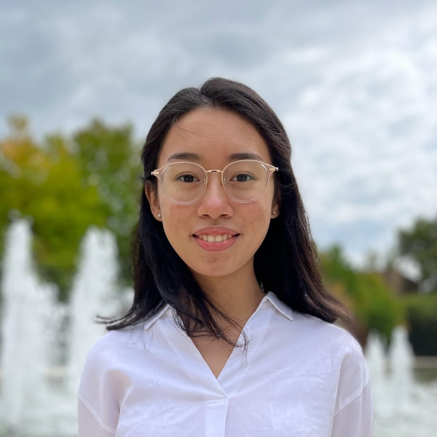

mail
emilyywu@umich.edu
description
Resume
╭────────⋆〔❨✧_✧❩〕⋆────────╮
Hello there!
I'm a third year robotics and computer science student at the University of Michigan. I'm passionate about using robotics and user-centered design to help people, and I'm always interested in learning new things.
Some projects I've worked on in the past include creating a self-balancing ballbot, collaborating on navigation solutions for my autonomous robot project team, and implementing a frontier exploration package for my internship at CERL.
Speaking more about myself, I am from Northern Virginia; I love to read, bike, and crochet (though I am always trying new hobbies!); and I also love meeting new people, so feel free to reach out!
favoriteEmily
╰────────⋆〔❨✧_✧❩〕⋆────────╯